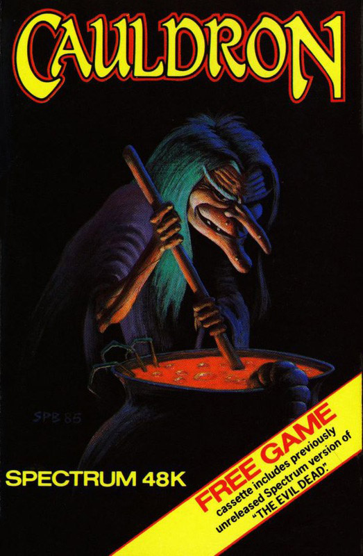
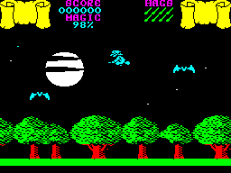
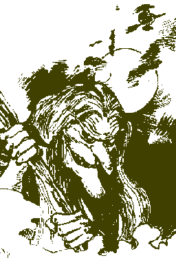

Cauldron


{kind=link}

| Publisher: | Palace Software |
| Price: | £7.99 |
| Year: | 1985 |
| Source: | CRASH, Issue 18 |

On a hill many miles away there is a green door behind which there is a Golden Broomstick, a thing so powerful that the it is sought after by the best and cleverest witches in the land, but only you are prepared to face the dangers that lie behind the door. It’s not that you are being particularly brave but you have this spell that should defeat the powers of the pumpkin’s room and leave you, as a prize, with the witches’ golden broom.

Your spell needs six basic ingredients not normally found on supermarket shelves, in fact they can only be found behind other coloured doors for which you will need the coloured keys. So your first task is to find the keys by flying on your own tatty broomstick round the locality. The keys can commonly be seen propped up against trees all that remains is for you to land and pick them up. As you peruse the skies you are attacked by all manner of things. Witch-eating bats, cloak-scorching fireballs, murderous pumpkins and badly behaved seagulls are just a few of the hazards facing you. Of course your magic defends you from their onslaught (witch is to say that your broomstick is actually a 4.5mm quick-firing cannon) but your life force is depleted by as much as four or five points. However by firing directly at the attackers will only cost you one point per shot so since each of your eight lives (or hags) only have 99 points to start with you really can’t afford to be flippant.
With the correct key you can get into any of the caverns although you will have to discover for yourself which caverns to visit first. Each cavern presents a sort of platform game problem that requires great skill and dexterity to negotiate. When you have reached whatever it is that you are looking for you must return home to add it to the pot. After collecting the six main ingredients you will be able to complete the spell that will rid the land of the pumpkin and win that new broom.
As a bonus, on the B side of the cassette is a Spectrum version of the earlier Palace game, The Evil Dead.
CRITICISM

‘I find the graphics in this game very pleasing but I think the movement could have been improved. Rather than the whole screen scrolling from one side to another as you fly, it scrolls in pages, as you reach the far side of one page it rapidly scrolls across so that you are back on the other side of a different screen. The ‘how do I get over there’ problems in the caverns are very tricky and demand great skill. The attacking nasties are a real pain because there are so many of them, even killing them costs energy so you really will need those lives if you want to complete the game. Very attractive game, playable and I find it fairly addictive.’
‘I’ve nothing but praise for this game, graphic detail is marvellous and colour is exceptionally well used. Animation is great too. It’s not an easy game by any means — flying through the air seems fun at first until ferocious bats (vampires?) try continually to drag you down. Finding the well spread and randomly placed keys isn’t easy either, using them is even worse — as you open up one of the colour-coded doors a new underwurlde appears, offering you screens in a platform — or should I say ‘stepping stone’ — game. This is even more difficult than the aerial sequences, because for half of the time you don’t know where you’ll land up when you step blindly off one screen into another. Eight hags might seem a lot of lives to you, but you could have eighty and it wouldn’t be enough. A delightful game that is bound to prove popular.’
‘Here’s another game that has been converted from the 64. They’ve had some trouble with the continually scrolling screen, but the Spectrum page scrolling, though nowhere near as attractive, is a reasonable compromise. The graphics look very good though. Flying on your broomstick is a tricky business with the ghosts, bats and deadly pumpkin pods all homing in on you — don’t hang about in one place too long! The caverns present a totally different game with different problems, so Cauldron represents good value in gameplay, and the good graphics, hard to get to rooms, size of the game and difficulty level makes it addictive to play, and with a second free game on board, good value too, although Evil Dead isn’t the most mega-fab program.’
COMMENTS
| Control keys: | Cap/Z left/right, X/C down/up, and V to fire |
| Joystick: | Kempston, Cursor, Sinclair |
| Keyboard play: | Responsive |
| Use of colour: | Very good |
| Graphics: | Detailed, well moving |
| Sound: | Good |
| Skill levels: | 1 |
| Lives: | 8 |
| Screens: | 64 below ground — a lot above! |
| General rating: | A large, engaging and difficult game for the arcade player |
| Use of computer: | 80% |
| Graphics: | 89% |
| Playability: | 90% |
| Getting started: | 86% |
| Addictive qualities: | 91% |
| Value for money: | 90% |
| Overall: | 91% |